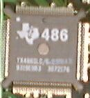

C8087-1
C8087-2
NEC V30
NEC V33A(PC-98DO+)
NEC V40
NEC V50
C80287-XL
D80287-10
N80286-12
AMD N80L286-12/S
A80386DX-20
A80386DX-33
NC80386SX-20
A80387DX-20
A80387DX-33
N80387SX-16
N80387SX-20
A80486DX-33(PC-9821As)
A80486DX2-50
A80486DX2-66(PC-9821Ap)
A80486DX4-100
KU80486SX-25(PC-9821Ae)
KU80486SX-33(PC-9821As2)
A80486SX-33
A80487SX

AMD Am486DX4-100
Cyrix Cx486DRX20/40GP

Cyrix Cx486DX2v66
Cyrix Cx486SLC20MP
IBM 14 PQ 50G7262
TI TX486DLC-25GA P
TI TX486SLC/E-25MAB
